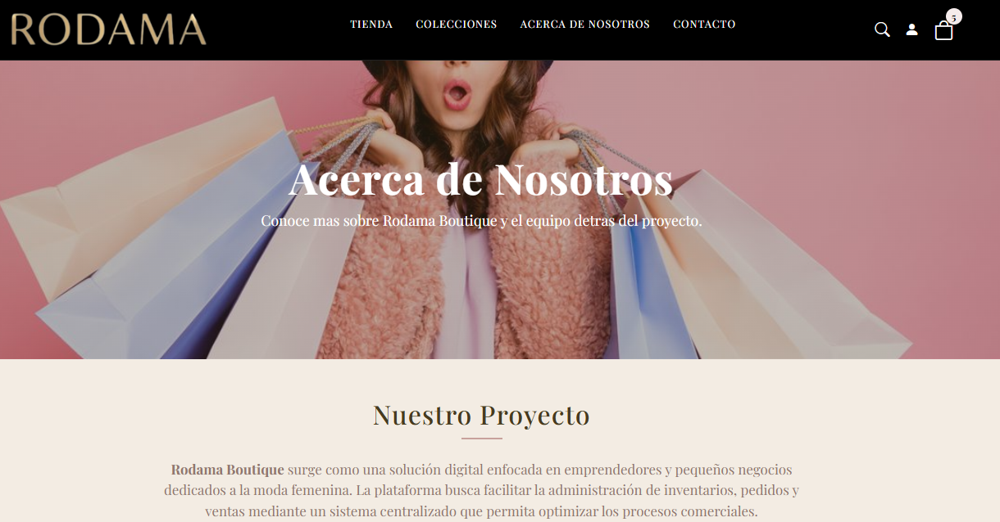
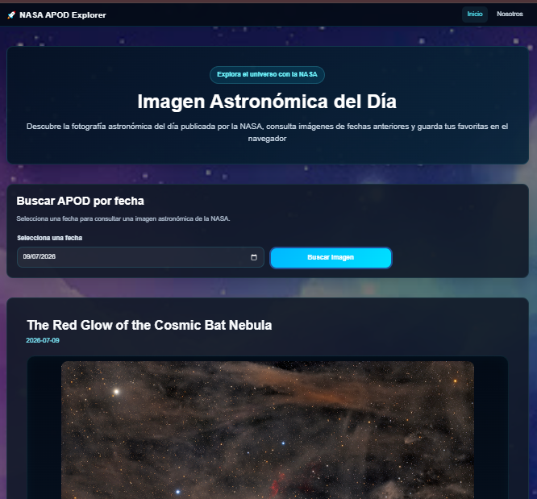
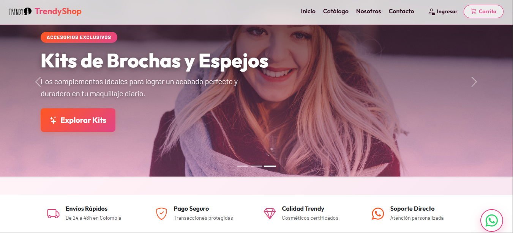

Desarrollo Web
Interfaces modernas, funcionales y adaptables para diferentes dispositivos.
Desarrollo aplicaciones web modernas utilizando tecnologías frontend y backend, enfocándome en crear soluciones eficientes, escalables y con una experiencia de usuario intuitiva. Disfruto aprender constantemente y transformar ideas en proyectos funcionales.
Mi camino profesional comenzó en el área administrativa, donde me formé como Profesional en Administración de Empresas. Esta experiencia fortaleció habilidades como la organización, el análisis, la planificación y la toma de decisiones, competencias que hoy aportan valor a mi crecimiento en el desarrollo de software.
Motivada por mi interés en la tecnología, inicié mi formación como Desarrolladora Full Stack con enfoque en Java. A través de distintos proyectos he fortalecido mis conocimientos en desarrollo backend y frontend, bases de datos, consumo de APIs, control de versiones y metodologías de trabajo, construyendo soluciones enfocadas en la calidad y la experiencia del usuario.
Me caracterizo por ser una persona responsable, organizada y con una gran capacidad de adaptación. Disfruto asumir nuevos retos, trabajar en equipo y seguir perfeccionando mis habilidades para contribuir al desarrollo de aplicaciones que generen un impacto positivo.
Interfaces modernas, funcionales y adaptables para diferentes dispositivos.
Aplicaciones con código organizado, lógica clara y buenas prácticas.
Interés constante por explorar herramientas y afrontar nuevos retos.
Comunicación, responsabilidad y colaboración en proyectos conjuntos.
Estas son algunas de las tecnologías que forman parte de mi proceso de aprendizaje y de los proyectos que he desarrollado.
Cada desarrollo refleja mi crecimiento técnico, la aplicación de buenas prácticas y el compromiso con la creación de soluciones web funcionales.

Tienda online de ropa femenina desarrollada como proyecto colaborativo. Participé en el desarrollo de funcionalidades frontend y backend, creando una experiencia de usuario moderna, organizada e intuitiva para la gestión y visualización de productos.
Ver proyecto
Aplicación web que consume la API Astronomy Picture of the Day de la NASA para mostrar diariamente imágenes astronómicas junto con su descripción, fecha e información relevante.
Ver en GitHub →
Proyecto desarrollado en equipo durante una Hackathon, aplicando metodologías ágiles, trabajo colaborativo y resolución de problemas para construir una solución funcional en un tiempo limitado.
Ver en GitHub →Puedes conocer más proyectos y ejercicios desarrollados durante mi proceso de aprendizaje visitando mi perfil de GitHub.
Ver GitHub →Un recorrido por las etapas que han fortalecido mis conocimientos, habilidades y crecimiento profesional.
Bootcamp de Desarrollo Full Stack Java con formación en Java y SQL.
Profesional en Administración de Empresas.
Tecnóloga en Gestión Empresarial.
Coordiné el seguimiento de proyectos de innovación, apoyando la planificación, la gestión de actividades y la comunicación con empresas y aliados estratégicos, fortaleciendo habilidades de organización y trabajo colaborativo.
Gestioné la atención al cliente a través de canales digitales, desarrollando habilidades de comunicación, resolución de problemas y orientación al servicio en un entorno de alto desempeño.
Si deseas conocer más sobre mi perfil o conversar sobre una oportunidad, no dudes en ponerte en contacto conmigo.